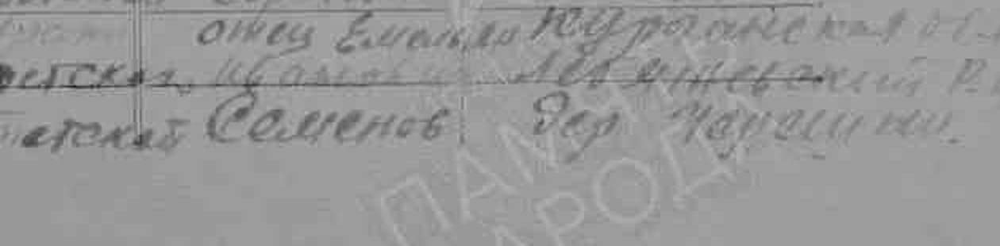

СЕМЕЙНЫЙ АРХИВ · 6 НОЯБРЯ 2026
История семьи Носковых
Первые военные документы и маршрут к местным семейным записям
Рабочая версия. Архивно подтверждённые сведения о записях отделены от семейных связей и кандидатов. Всё дерево целиком пока не доказано. Файл содержит частные семейные сведения; внешняя публикация не выполнялась.
Откуда начинается поиск
Сергей и Максим Юрьевичи Носковы — братья по предоставленной схеме. Ниже показаны обе линии Сергея; общие родители указаны для обоих братьев в реестрах и GEDCOM. Все рёбра здесь опираются на семейную схему; число поколений не расширено догадками.
- Родитель · семейная схемаНосков Юрий Анатольевич
- Родитель · семейная схемаНосков Анатолий Сергеевич
- Родитель · семейная схемаНосков Сергей Фёдорович
- Родитель · семейная схемаНосков Фёдор
- Родитель · семейная схемаАндреева Ульяна Ивановна
- Родитель · семейная схемаАндреев Иван
- Родитель · семейная схемаНосков Сергей Фёдорович
- Родитель · семейная схемаНоскова (Кочетова) Александра Фёдоровна
- Родитель · семейная схемаКочетов Фёдор Иванович
- Родитель · семейная схемаКочетов Иван
- Родитель · семейная схемаПодсевалова Прасковья Степановна
- Родитель · семейная схемаПодсевалов Степан
- Родитель · семейная схемаМатрёна Фёдоровна (фамилия неизвестна)
- Родитель · семейная схемаКочетов Фёдор Иванович
- Родитель · семейная схемаНосков Анатолий Сергеевич
- Родитель · семейная схемаНоскова (Семёнова) Ольга Александровна
- Родитель · семейная схемаСемёнов Александр Емельянович
- Родитель · семейная схемаСемёнов Емельян Иванович
- Родитель · семейная схемаСемёнов Иван
- Родитель · семейная схемаСемёнова Анна Дементьевна
- Родитель · семейная схемаЕгоров Дементий
- Родитель · семейная схемаСемёнов Емельян Иванович
- Родитель · семейная схемаСемёнова (Петрова) Агния Васильевна
- Родитель · семейная схемаПетров Василий Ефимович
- Родитель · семейная схемаПетров Ефим
- Родитель · семейная схемаКаршина Прасковья Васильевна
- Родитель · семейная схемаКаршин Василий
- Родитель · семейная схемаПетров Василий Ефимович
- Родитель · семейная схемаСемёнов Александр Емельянович
Боковая линия: Алексей Емельянович Семёнов — брат Александра по семейным сведениям. Его отец Емельян Иванович прямо назван в найденном военном донесении. Татьяна, Галина, Марина, Владимир и Ирина сохранены без выдуманных полных ФИО.
Три военные судьбы


Имена портретов даны семьёй. Внешнее сходство не использовано как доказательство личности. Скачанные портреты мемориальных страниц находятся в candidates и не являются независимыми подтверждениями.
Алексей Семёнов: имя отца найдено в донесении
Донесение указывает 1924 год рождения, Лебяжьевский РВК, младшего сержанта, связиста 850-го стрелкового полка 277-й дивизии. В графе родственников назван отец Емельян Иванович Семёнов. ФИО, отец, местность и судьба согласуются с семейными сведениями; принадлежность записи семье вероятна. Материнство Анны Дементьевны и связь с Александром ещё требуют актов.
Оба просмотренных военных скана дают 15 июня 1944; первичное захоронение — Бураки Витебской области. Книга памяти даёт 16 июня. Сведения о Высочанах пока подтверждены только мемориальной страницей. [A-0010] [A-0011] [A-0009] [A-0007]

Сергей Носков: два наградных решения
В 1943 году разведчик 45-мм батареи 570-го полка 227-й Таманской дивизии, 1906 года рождения, призванный Лебяжьевским РВК, был представлен к ордену Славы III степени. На обороте — решение о медали «За отвагу», приказ №020/н от 4 декабря 1943 года. Представление и фактическую награду смешивать нельзя. [A-0015] [A-0016]
В листе от 25 декабря 1944 года он уже сержант 43-го отдельного батальона охраны управления 4-го Украинского фронта. Описаны четыре лёгких ранения; на обороте решение о медали «За отвагу» по приказу №9/н от 19 января 1945 года. Вероятная связь двух записей — по ФИО, 1906 году, Лебяжьевскому военкомату и согласующейся службе в 570-м полку. Родство с Анатолием этим не доказано. [A-0012] [A-0013]
Лист 1943 · Оборот с решением · Лист 1944/1945 · Второе решение


Медаль «За боевые заслуги» и демобилизация в октябре 1945 года пока известны из семейного рассказа/мемориальной страницы. Их отсутствие в найденных листах не доказывает, что их не было.
Василий Петров: сохраняем кандидата отдельно
Найден Петров Василий Ефимович, 1895 года рождения, Островинский сельсовет, призыв в 1941 году, рядовой. В послевоенном документе учтён пропавшим без вести в декабре 1942. В строке есть напечатанный август и рукописная поправка «12-42». Это не доказательство точной даты гибели. Жена названа Пелагеей; её отчество на копии требует повторного чтения. [A-0017]
Мемориальная страница сообщает полную дату 28.01.1895, Островное и имя жены Пелагея Васильевна. В семье допущена возможность путаницы с Прасковьей, но запись о дочери Агнии не найдена. Кандидат P-0032 не объединён с семейным P-0022. [A-0008] [A-0005]

Лебяжье: где искать поколения
Старое село/деревню Лебяжье 1-е нужно отличать от посёлка у железнодорожной станции. Рабочая дореволюционная привязка — Курганский уезд Тобольской губернии. Вторичный указатель называет Крестовоздвиженский приход и Черешкову в его составе на 1913 год; он отсылает к справочнику епархии, с.102. Первичная страница и конкретная волость 1906 года ещё не проверены. [A-0021] [A-0024]
Наводка форума — ГАКО, ф.211, оп.1, Крестовоздвиженская церковь с.Лебяжьевского. Опись и метрика рождения Сергея за 1906 год не прочитаны; номер дела не придуман. [A-0022]
В официальном перечне муниципального архива опубликованы ф.63 — Лебяжьевский поссовет (1941–2010), ф.31 — Перволебяжьевский сельсовет (1992–2009), ф.102 — колхоз им. Ленина Черешковского сельсовета (1949–1957). Это реальные названия фондов, а не уже найденные именные записи. Проверка похозяйственных книг — следующий путь к датам дедов. [A-0023]
Родственные связи: что служит основанием
32 связи ниже имеют статус single-source. Он означает одну доказательную цепочку и не превращает семейную схему в независимо подтверждённую родословную. Для отца Алексея дополнительно найдено прямое архивное указание; независимость семейного рассказа от публикаций пока не установлена.
| ID | Человек A | Связь | Человек B | Основание |
|---|---|---|---|---|
| R-0001 | Носков Юрий Анатольевич | Родитель | Носков Сергей Юрьевич | A-0001 single-source Семейная схема; независимого документального подтверждения нет |
| R-0002 | Носкова (Семёнова) Ольга Александровна | Родитель | Носков Сергей Юрьевич | A-0001 single-source Семейная схема; независимого документального подтверждения нет |
| R-0003 | Носков Юрий Анатольевич | Родитель | Носков Максим Юрьевич | A-0001 single-source Семейная схема; независимого документального подтверждения нет |
| R-0004 | Носкова (Семёнова) Ольга Александровна | Родитель | Носков Максим Юрьевич | A-0001 single-source Семейная схема; независимого документального подтверждения нет |
| R-0005 | Носков Анатолий Сергеевич | Родитель | Носков Юрий Анатольевич | A-0001 single-source Семейная схема; независимого документального подтверждения нет |
| R-0006 | Носкова (Кочетова) Александра Фёдоровна | Родитель | Носков Юрий Анатольевич | A-0001 single-source Семейная схема; независимого документального подтверждения нет |
| R-0007 | Носков Сергей Фёдорович | Родитель | Носков Анатолий Сергеевич | A-0001 single-source Семейная схема; независимого документального подтверждения нет |
| R-0008 | Андреева Ульяна Ивановна | Родитель | Носков Анатолий Сергеевич | A-0001 single-source Семейная схема; независимого документального подтверждения нет |
| R-0009 | Носков Фёдор | Родитель | Носков Сергей Фёдорович | A-0001 single-source Семейная схема; независимого документального подтверждения нет |
| R-0010 | Андреев Иван | Родитель | Андреева Ульяна Ивановна | A-0001 single-source Семейная схема; независимого документального подтверждения нет |
| R-0011 | Кочетов Фёдор Иванович | Родитель | Носкова (Кочетова) Александра Фёдоровна | A-0001 single-source Семейная схема; независимого документального подтверждения нет |
| R-0012 | Подсевалова Прасковья Степановна | Родитель | Носкова (Кочетова) Александра Фёдоровна | A-0001 single-source Семейная схема; независимого документального подтверждения нет |
| R-0013 | Кочетов Иван | Родитель | Кочетов Фёдор Иванович | A-0001 single-source Семейная схема; независимого документального подтверждения нет |
| R-0014 | Подсевалов Степан | Родитель | Подсевалова Прасковья Степановна | A-0001 single-source Семейная схема; независимого документального подтверждения нет |
| R-0015 | Матрёна Фёдоровна (фамилия неизвестна) | Родитель | Подсевалова Прасковья Степановна | A-0001 single-source Семейная схема; независимого документального подтверждения нет |
| R-0016 | Семёнов Александр Емельянович | Родитель | Носкова (Семёнова) Ольга Александровна | A-0001 single-source Семейная схема; независимого документального подтверждения нет |
| R-0017 | Семёнова (Петрова) Агния Васильевна | Родитель | Носкова (Семёнова) Ольга Александровна | A-0001 single-source Семейная схема; независимого документального подтверждения нет |
| R-0018 | Семёнов Емельян Иванович | Родитель | Семёнов Александр Емельянович | A-0001 single-source Семейная схема; независимого документального подтверждения нет |
| R-0019 | Семёнова Анна Дементьевна | Родитель | Семёнов Александр Емельянович | A-0001 single-source Семейная схема; независимого документального подтверждения нет |
| R-0020 | Семёнов Иван | Родитель | Семёнов Емельян Иванович | A-0001 single-source Семейная схема; независимого документального подтверждения нет |
| R-0021 | Егоров Дементий | Родитель | Семёнова Анна Дементьевна | A-0001 single-source Семейная схема; независимого документального подтверждения нет |
| R-0022 | Петров Василий Ефимович | Родитель | Семёнова (Петрова) Агния Васильевна | A-0001 single-source Семейная схема; независимого документального подтверждения нет |
| R-0023 | Каршина Прасковья Васильевна | Родитель | Семёнова (Петрова) Агния Васильевна | A-0001 single-source Семейная схема; независимого документального подтверждения нет |
| R-0024 | Петров Ефим | Родитель | Петров Василий Ефимович | A-0001 single-source Семейная схема; независимого документального подтверждения нет |
| R-0025 | Каршин Василий | Родитель | Каршина Прасковья Васильевна | A-0001 single-source Семейная схема; независимого документального подтверждения нет |
| R-0026 | Семёнов Емельян Иванович | Родитель | Семёнов Алексей Емельянович | A-0001;A-0010 single-source Отец прямо назван в военном донесении и в семейной схеме; независимость семейной информации ещё не установлена. Статусsingle-source сохранён. |
| R-0027 | Семёнова Анна Дементьевна | Родитель | Семёнов Алексей Емельянович | A-0001 single-source Семейная схема; независимого документального подтверждения нет |
| R-0028 | Носкова (Семёнова) Ольга Александровна | Брат/сестра | Татьяна (сестра Ольги; полное имя неизвестно) | A-0001 single-source Свидетельство семьи; общие родители не добавлены как установленный факт |
| R-0029 | Носкова (Семёнова) Ольга Александровна | Брат/сестра | Галина (сестра Ольги; полное имя неизвестно) | A-0001 single-source Свидетельство семьи; общие родители не добавлены как установленный факт |
| R-0030 | Носкова (Семёнова) Ольга Александровна | Брат/сестра | Марина (сестра Ольги; полное имя неизвестно) | A-0001 single-source Свидетельство семьи; общие родители не добавлены как установленный факт |
| R-0031 | Носков Юрий Анатольевич | Брат/сестра | Владимир (брат Юрия; предположительно Носков Владимир Анатольевич) | A-0001 single-source Свидетельство семьи; общие родители не добавлены как установленный факт |
| R-0032 | Носков Юрий Анатольевич | Брат/сестра | Ирина (сестра Юрия; полное имя неизвестно) | A-0001 single-source Свидетельство семьи; общие родители не добавлены как установленный факт |
Скачанные источники и происхождение
Ссылки на локальные копии и оригинальные страницы. SHA-256 всех файлов — в манифесте. Рабочие фрагменты не изменяют оригиналы.
| ID / источник | Архивная ссылка и ограничения | Копия |
|---|---|---|
| A-0001 Исходная семейная схема и воспоминания, предоставлены пользователем Семейный локальный источник | 25 прямых персон; Алексей Семёнов и пять названных боковых родственников. Непроверенные семейные сведения. Группа: IG-family-intake | Открыть копию |
| A-0002 Семейный портрет: Носков Сергей Фёдорович Семейный локальный источник | Личность указана пользователем по имени файла; дата и происхождение исходного снимка не установлены. Группа: IG-family-photo-5 | Открыть копию |
| A-0003 Семейный портрет: Петров Василий Ефимович Семейный локальный источник | Личность указана пользователем по имени файла; дата и происхождение исходного снимка не установлены. Группа: IG-family-photo-22 | Открыть копию |
| A-0004 Семейный портрет: Семёнов Алексей Емельянович Семейный локальный источник | Личность указана пользователем по имени файла; дата и происхождение исходного снимка не установлены. Группа: IG-family-photo-26 | Открыть копию |
| A-0005 Уточнения семейных сведений Семейный локальный источник | Группа: IG-family-intake | Открыть копию |
| A-0006 Бессмертный полк: noskov-sergey-fedorovich Страница источника | Пользовательская мемориальная публикация; происхождение сведений не раскрыто. Не считать независимой от семьи или военного документа автоматически. Группа: IG-moypolk-moy_noskov | Открыть копию |
| A-0007 Бессмертный полк: semenov-aleksey-emelyanovich Страница источника | Пользовательская мемориальная публикация; происхождение сведений не раскрыто. Не считать независимой от семьи или военного документа автоматически. Группа: IG-moypolk-moy_semenov | Открыть копию |
| A-0008 Бессмертный полк: petrov-vasiliy-efimovich-2 Страница источника | Пользовательская мемориальная публикация; происхождение сведений не раскрыто. Не считать независимой от семьи или военного документа автоматически. Группа: IG-moypolk-moy_petrov | Открыть копию |
| A-0009 Книга памяти Курганской области, том 12, фрагмент с.201–300 Страница источника | Печатная с.220, PDF-страница20; Алексей Семёнов; дата 16.06.1944 Группа: IG-semenov-loss-chain | Открыть копию |
| A-0010 Именной список потерь 850 сп 277 сд, строка13 Страница источника | ЦАМО. Ф.58. Оп.18002. Д.493; изображение00000122, страница3 донесения; рукописная нумерация листа требует сверки Группа: IG-semenov-loss-chain | Открыть копию |
| A-0011 Книга учёта потерь: Алексей Семёнов, строка13 Страница источника | ЦАМО. Ф.1573. Оп.2. Д.68; изображение00000091, рукописная с.98. Зависимость от донесения возможна Группа: IG-semenov-loss-chain | Открыть копию |
| A-0012 Наградной лист Носкова Сергея Фёдоровича, 25.12.1944 Страница источника | ЦАМО. Ф.33. Оп.690306. Д.1820; цифровой контейнер033-0690306-1820+012-1828; изображение130 Группа: IG-noskov-award1945 | Открыть копию |
| A-0013 Оборот наградного листа: приказ №9/н от19.01.1945 Страница источника | Тот же наградной лист; изображение131. Медаль «За отвагу» Группа: IG-noskov-award1945 | Открыть копию |
| A-0014 Фрагмент списка к приказу; Носков, пункт28 Страница источника | Изображение00000007, напечатанная с.5. Это страница списка, не титульный лист приказа Группа: IG-noskov-award1945 | Открыть копию |
| A-0015 Представление Носкова к ордену Славы III степени, 27.11.1943 Страница источника | ЦАМО. Ф.33. Оп.686044. Д.1832; контейнер033-0686044-1832+004-1831; изображение423 Группа: IG-noskov-award1943 | Открыть копию |
| A-0016 Оборот: решение наградить медалью «За отвагу» Страница источника | Изображение424: приказ227Тсд №020/н от04.12.1943; отметка от11.12.1943 Группа: IG-noskov-award1943 | Открыть копию |
| A-0017 Послевоенное уточнение потерь, Петров Василий Ефимович, строка10 Страница источника | ЦАМО. Ф.58. Оп.18004. Д.528; изображение256, напечатанная с.2. Учетная дата12.1942; в тексте август1942 и рукописная поправка Группа: IG-petrov-loss-chain | Открыть копию |
| A-0018 Портрет с мемориальной страницы (проверка атрибуции) Страница источника | Скачан по опубликованной ссылке страницы. Отличается разрешением от семейного файла; не независимое доказательство личности. Источник сайта см. соответствующую HTML-копию. Группа: IG-moypolk-moy_noskov | Открыть копию |
| A-0019 Портрет с мемориальной страницы (проверка атрибуции) Страница источника | Скачан по опубликованной ссылке страницы. Отличается разрешением от семейного файла; не независимое доказательство личности. Источник сайта см. соответствующую HTML-копию. Группа: IG-moypolk-moy_semenov | Открыть копию |
| A-0020 Портрет с мемориальной страницы (проверка атрибуции) Страница источника | Скачан по опубликованной ссылке страницы. Отличается разрешением от семейного файла; не независимое доказательство личности. Источник сайта см. соответствующую HTML-копию. Группа: IG-moypolk-moy_petrov | Открыть копию |
| A-0021 Географическая наводка: Лебяжье1-е и Черешкова Страница источника | Группа: IG-geography-secondary | Открыть копию |
| A-0022 Форум ВГД: перечень церковных фондов ГАКО Страница источника | Крестовоздвиженская церковь с.Лебяжьевского: ф.211, оп.1; сведения участника форума, опись не проверена Группа: IG-gako-forum | Открыть копию |
| A-0023 Перечень фондов муниципального архива Лебяжьевского района Страница источника | Ф.63 Администрация Лебяжьевского поссовета1941–2010; ф.31 Администрация Перволебяжьевского сельсовета1992–2009; ф.102 колхоз им.Ленина Черешковского с/с1949–1957. Старый сайт; актуальную сохранность уточнить Группа: IG-municipal-catalog | Открыть копию |
| A-0024 Президентская библиотека: каталог епархиального справочника1913 Страница источника | Карточка сообщает доступ только в электронных читальных залах. Содержание с.102 не проверено. Группа: IG-prlib-catalog | Открыть копию |
| A-0025 Маршрут к документам Лебяжьего и Черешково Страница источника | Ф.31; Ф.63; Ф.102 (разные фондообразователи; конкретные описи и дела не определены) Группа: IG-municipal-catalog | Открыть копию |


Что ещё не установлено
Все поколения до пользователя пока не подтверждены актами. Служба дедов, девичьи фамилии и родители ранних предков, точное нынешнее захоронение Алексея, тождество Петрова, «Липицк» и семейное этническое предание остаются открытыми вопросами.
Портал военных документов показывал близкие ФИО и несоответствующие географические результаты; это не основание присоединять однофамильцев. ГАКО отвечал таймаутами, справочник 1913 ограничен электронными читальными залами. Муниципальный перечень открыт, но именных книг на проверенных страницах нет.
Приоритет — местные семейные/похозяйственные книги и метрики. Рабочий план · Проекты трёх запросов (не отправлены) · Противоречия · Хронология
GEDCOM 5.5.1 UTF-8 — помеченная конвертация семейной схемы, а не сертифицированная родословная. Внешний импорт не выполнялся. Персоны · Утверждения · Журнал проверок
Дополнительная проверка 6 ноября 2026
Второе прохождение открытых региональных и архивных указателей не установило новых родителей или братьев и сестёр семьи. Новых подтверждённых портретов родственников не найдено. Это ограничение проверенного охвата, а не утверждение об отсутствии документов.
- Арлагульская Александра Фёдоровна Носкова, фельдшер, исключена пользователем как другой человек. Не возвращать её в семейную карточку. - Региональный список участников войны сообщает о Сергее Фёдоровиче Носкове, призванном11.08.1941, курсанте танкового училища. Без года рождения и первичного шифра запись остаётся гипотезой; точная дата не присвоена P-0005. - В официальном индексе Исторического архива Омской области прочитан Александр Емельянович Семёнов1922, д.Хомутинка, Еланский волисполком Калачинского уезда: ф.Р-580, оп.4, д.897, л.60. Родителей и изображения акта в карточке нет; не объединён с дедушкой P-0016. Расширение дерева этой семьёй не обосновано. - Дополнительный маршрут: Р-2534, оп.1–2 (1920–1937), ГАКО; И156, оп.15, Тобольск. Пока это вторичные указания на фонды, не найденные записи семьи. ГАКО снова недоступен по таймауту. - Имена родителей современного поколения и общие родители неизвестных боковых родственников требуют местных похозяйственных/актовых записей. Новые имена, даты и фото по совпадению фамилии не добавлены.
Гражданские именные зацепки
— дополнительная проверка 6 ноября2026
Это новые направления проверки, а не установленные родственники или новые поколения.
- Носков Федор Ильин — открытый указатель переселенцев в Курганский уезд1880–1894 (sibrodarh.ru/19). Носков Федор без отчества — список1893–1914 (sibrodarh.ru/28). Возможное соответствие семейному P-0006 не установлено. Периоды — даты списков, не рождения. - Андреев Иван Кондратьев и Андреев Иван Яковлев — те же два курганских указателя. В семье у Ивана, отца Ульяны, отчество неизвестно. Выбрать кандидата без акта Ульяны нельзя. - Кочетов Федор Иванов — общий омский указатель sibrodarh.ru/basearh. Совпадение с P-0010 требует проверки: не показаны точное селение, возраст, жена и дети. - Администрация Лебяжьевского округа прямо сообщает о похозяйственных книгах в муниципальном читальном зале: https://ok.ru/admlebyazhyevskogorayona/topic/157088660332574 . Нужный семье двор пока не найден. - В ГАСО «Раскулаченные» проверены все3 страницы Лебяжьевского района; подходящих семейных совпадений нет. Это не доказательство отсутствия репрессий или отсутствия записей в остальных разделах. Агния1920 из выдачи — дочь Артемия Игнатьева, не подтверждение Агнии Васильевны Петровой.
Открытые строки указателей — современные именные списки, не сканы исторических документов. Их шифры, полные хозяйства, составы семей и связь с потомками ещё нужны. Никаких платных заявок и писем не отправлено. Все три именные гипотезы сохранены отдельно; отчества не присвоены семейным персонам.
Текстовые выписки: 1880–1894 · 1893–1914 · Кочетов · Муниципальные книги